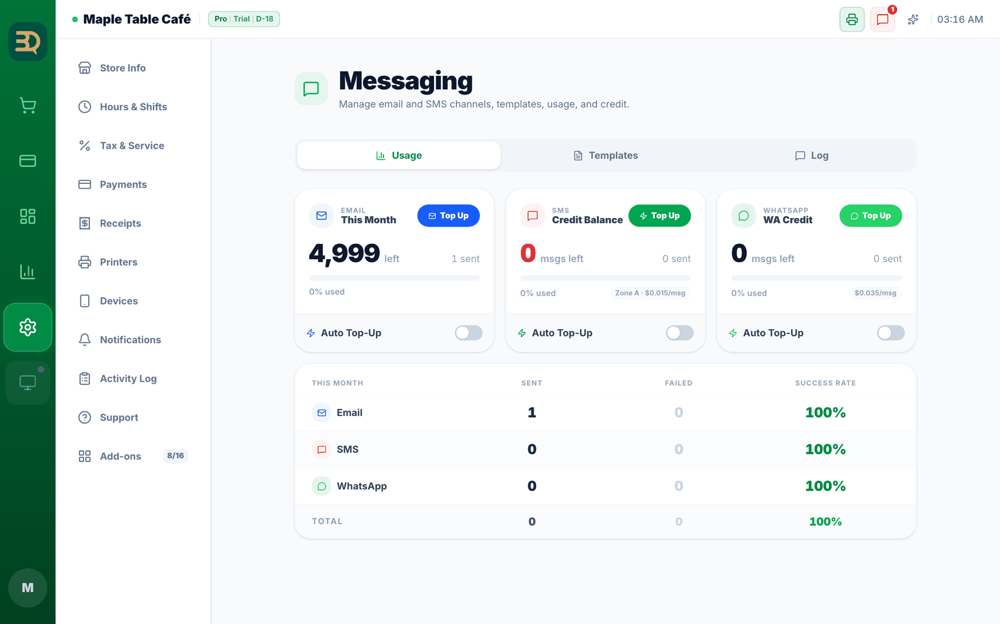

19Enviar mensajes a sus clientes
Puede enviar a sus clientes un recibo o una nota breve. Puede elegir el medio que prefieran: correo, WhatsApp o mensaje de texto.
Gestione los tres canales (correo, SMS y WhatsApp) en Settings › Messaging. WhatsApp no es un complemento; es un canal de esta pantalla. SMS y WhatsApp son de pago por uso: agregue un poco de saldo y solo paga lo que envía.
Activar un canal y recargar
En la pestaña Usage (Uso) de Messaging verá tres tarjetas una al lado de la otra: Email (Correo), SMS (Credit Balance) y WhatsApp (WA Credit). Cada tarjeta muestra el saldo restante, cuántos envió este mes, un botón Top Up (Recargar) y un interruptor Auto Top-Up (Recarga automática).
- El correo está listo desde el primer día. Úselo para enviar recibos e informes diarios.
- WhatsApp no necesita la tienda de complementos. Active el canal en la tarjeta de WhatsApp y agregue saldo, y podrá enviar recibos, premios y avisos de "su mesa está lista". Al activar el canal recibe un correo para terminar de configurarlo, y hasta que recargue, la tarjeta dice "Enabled · add credit to send".
- Un mensaje de texto simple (SMS) funciona igual. Recargue en la tarjeta de SMS y solo paga los mensajes que envía.
- Cuando el saldo esté bajo, toque Top Up (Recargar) en la parte superior de esa tarjeta. Si prefiere no estar recargando, active Auto Top-Up (Recarga automática) en la parte inferior de la tarjeta y elija hasta dónde puede bajar antes de recargar y cuánto agregar. (En las apps de iPad y de escritorio, la tarjeta muestra un interruptor para activar o desactivar el canal en lugar de un enlace de pago).
Consentimiento y plantillas
Los clientes siempre aceptan primero antes de que usted les envíe mensajes. Si alguna vez responden STOP, BrewDesk deja de enviarles mensajes de inmediato. Encontrará el texto de cada mensaje en la pestaña Templates (Plantillas) y lo que se envió en la pestaña Log.

Temas relacionados
¿Necesita más ayuda?
Puede enviar un ticket de soporte desde la app en Settings › Support.